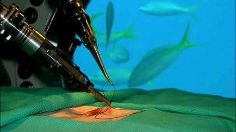

Robô na prática hospitalar
Cirurgia à distância

Referência
Se trata de realizar uma cirurgia num local onde o especialista não está presente,
utilizando toda tecnologia disponível na atualidade. Seja teleconferência, robótica
guiada a distância por computadores conectados á internet, entre outros dispositivos.
País: Canada
Ano: 2014
Válvula impressa em 3D

Referência Referência2
Impressoras 3d produzem válvulas de mascaras dos aparelhos de respiração para pacientes
internados por conta do corona vírus e salvam vidas em hospital. Essas peças ficaram a
um custo muito baixo (0,90 Euro) e foram produzidas em velocidade muito alta.
País: Itália
Ano: 2020
Empresa: lonati